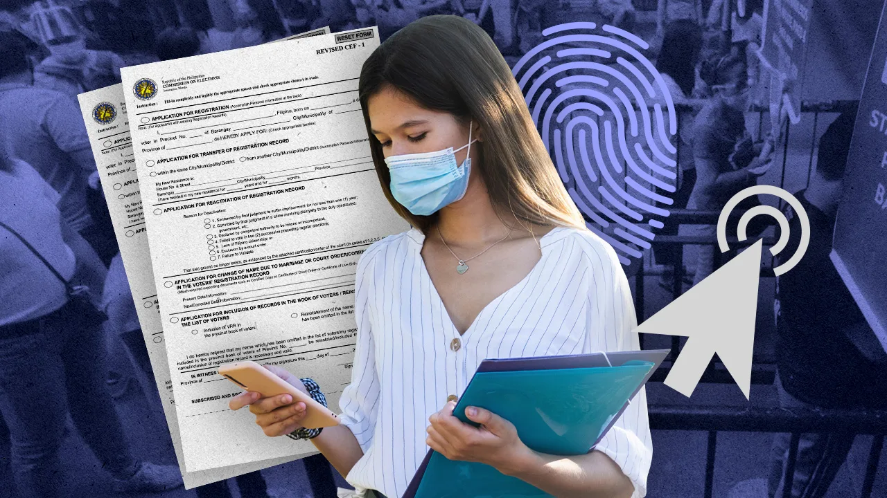

×
Home
News
Trivia
Candidates
How to Register
How to Vote
☰
How to Register
Simple Guide to Voter Registration

https://www.rappler.com/nation/elections/guides-how-to-reactivate-voter-registration-philippines/
Here's are simple steps to voter registration:
A qualified applicant needs only to book an appointment to appear personally at the Office of the Election Officer (OEO), the local COMELEC office (usually your city hall).
Print out the COMELEC form at home, and fill them out to save time(make sure that all your information is updated and accurate). However, it should only be signed and thumb marked before the Election Officer (EO).
Remember to bring the following when you register in person:
Your filled-out COMELEC forms
Valid ID and a photocopy
Pens
Face mask and face shield
Alcohol/hand sanitizer
Snacks and water
After filling out the contact tracing forms, submit your application to the EO, correct errors, if any, and finally, sign it in their presence.
The applicant's status of registration will also be verified. This may be done using a computer application at the OEO.
The applicant's biometrics will then be digitally captured using the Voter Registration Machine (VRM) by an authorized VRM Operator. They will be collecting your picture, digital signature, and fingerprints of your thumbs and index fingers.
An Acknowledgment Receipt will be given to the applicant afterward.
Note that filling in the form ONLY does not mean you are a voter yet.
Remember to keep all relevant documents in a safe place in case COMELEC might need it.